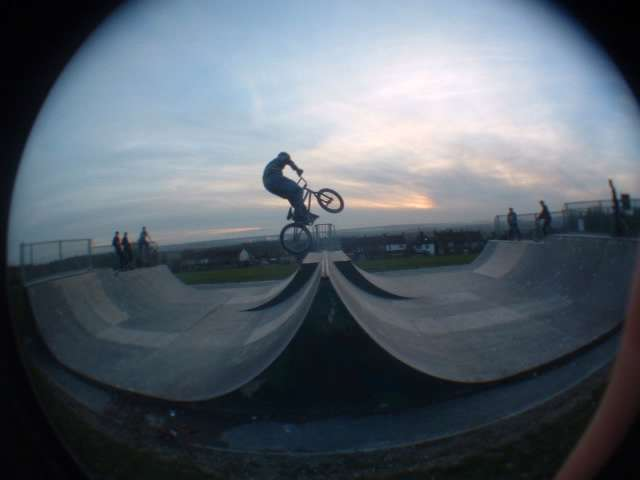
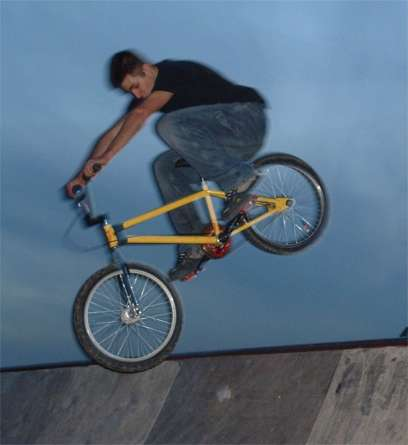
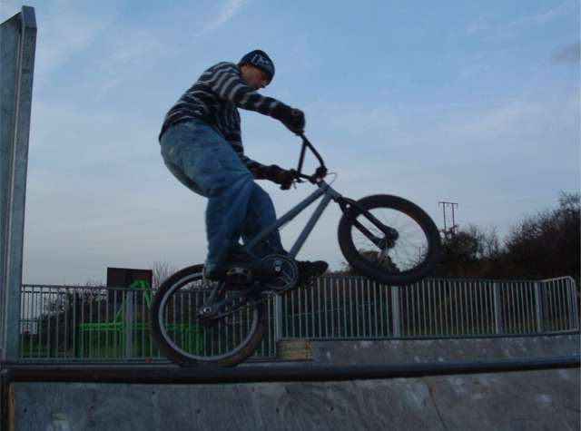
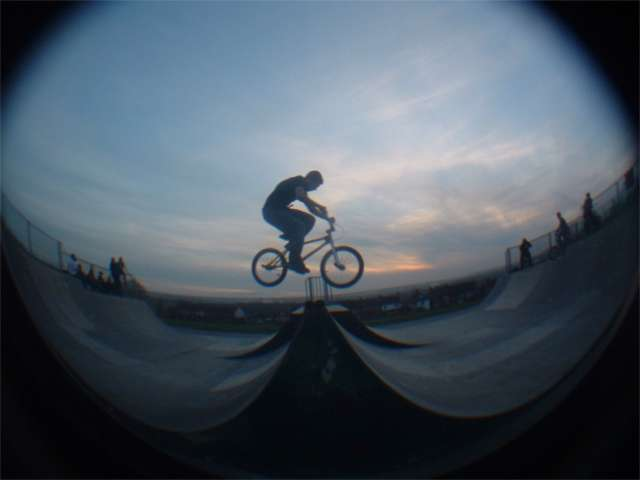
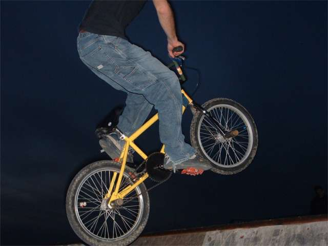
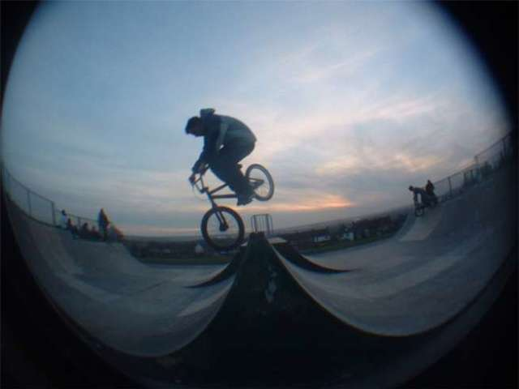
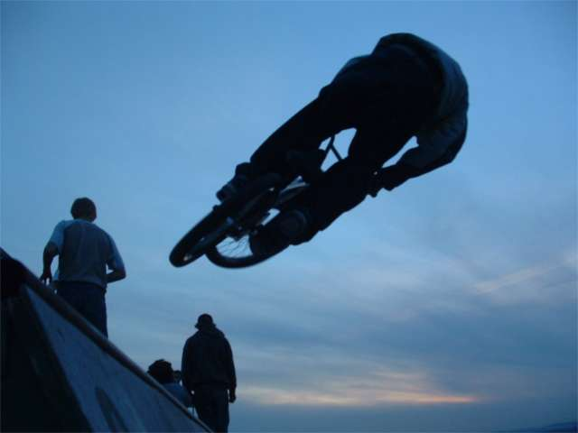
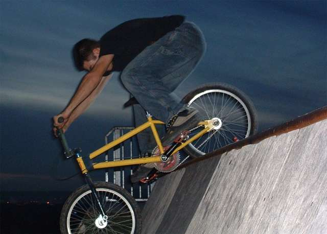
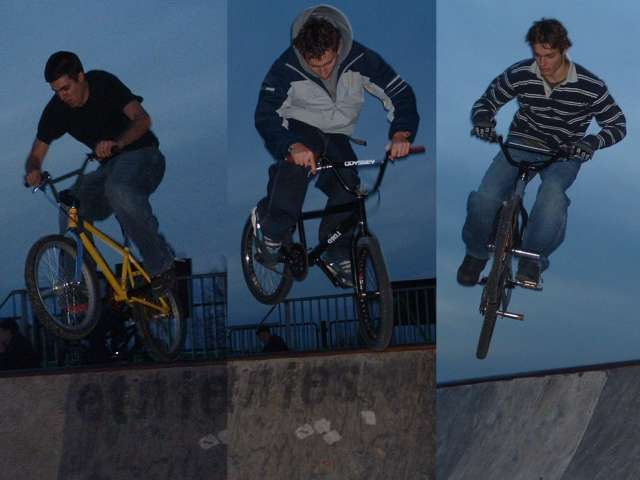
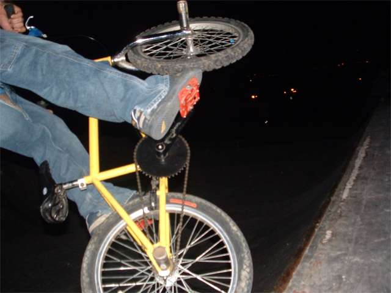

|
  burham mini ramp photoset two:burham is fun. this week we rode the spine which was a good thing for me cos its scary and steep. as with all big and scary things it was much easier than i thought. remember that. becky took absolutely every picture. some of them are with simons fish eye. on the left is me riding the spine. you can see the inside of my chainring. it's meant to be the outside but i turned it round so i look cool at the skatepark. does anyone have fsa smack daddys? haha that works as a joke too. i was just asking cos i need to take mine off so i can sort out the spacers as my chain line is bad, but i looks like i'm showing off about how good my cranks are. i am cool. as you know by now this writing is just here to keep you
amused and fill in awkward spaces, while the pictures load, but i know
you'll be itching to scroll down. just hold on for a bit longer as it's
annyoing seeing half a picture...  tim manualing the bit between the two small minis. it's a nice picture i think. good angle  me on the spine looking like a  below: we met some guys from stroud. they were better than us. here is one of them on the spine. he was pretty smooth and could air pretty high . nice flat tables too.  the people from stroud were friendly too. not often that people at the park are friendly to you. especially if you have a yellow bike, but these guys were good. below, same one again airing. the other guy didn't ride so much. i think he has an injury.  haha. people don't put pictures like this up, but i don't like people thinking that i can actually ride my bike, so as proof here's a picture os me hanging up the spine so badly that i nearly snapped my chain. i'm the anti-lima.  3 spine pictures in a row. i am the only right foot forward one. i think a greater percentage of riders go left foot forwards than average people are left handed. just to confuse matters i am left handed and go right foot forwards. finger on the brake look. i need to get a good brake that works with one finger.  and finally a small air. if you want to see more pictures then there are some but they are either bad or arty. or both. by clicking here you are agreeing to withhold any complaints about the poor quality of the following pictures.  |